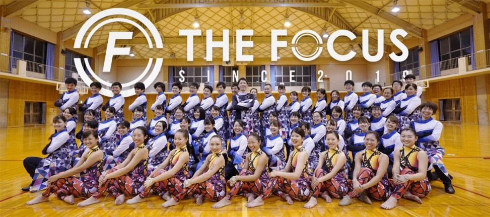

WE ARE THE FOCUS
THE FOCUSは2019年2月、浜松市において活動を開始したマーチングバンドです。
“THE FOCUS”=“感動の発震源”
私たち自身の心を震わせ、
楽器や身体を通じて空間を震わせ、
観客の皆さまの心を震わせ、
また私たち自身の心が震える
心が震え、身体中に熱い血が巡る…そんな感動の発震源であり続けたいと考えています。
大好きな仲間と一緒に大好きなマーチングができること…当たり前のことではありません。
全てのことへの愛と感謝の気持ちを忘れずに、心震える人間の持つエネルギーの全てをお届けすることを約束いたします。